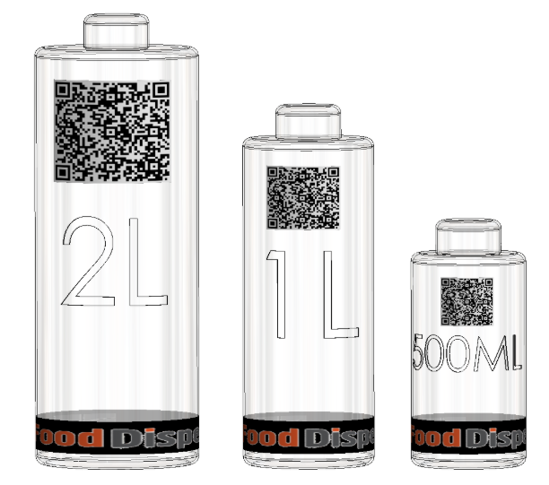

Liquid Food Dispenser Concept
A team concept design for a self-cleaning, eco-friendly liquid food dispenser for retailers, with QR-coded refillable bottles filled from a rotating carousel of inner canisters.
Overview
A team concept-design project (group 2A) at Saxion Mechatronics to design a newly improved liquid food dispenser aimed at retailers. The full concept is captured in the project poster below.

Concept poster
Design Brief
The dispenser had to be a clear improvement on existing machines, specifically for retail use. The main requirements were that it should need next to no human interaction, preferably be self-cleaning, be easy to restock, be eco-friendly, and offer an easy-to-use system for customers.
The Concept
Refillable bottles
Customers buy a reusable bottle at the retailer's front desk in three sizes - 500 mL, 1 L and 2 L. Each bottle carries a QR code that the machine scans to identify it.
Scanner & nozzles
The scanner reads the QR code and identifies the bottle, and the interface asks the user to insert it and shows a picture for confirmation. Ten nozzles - one per juice - sit on a rotating disc that turns to the selected beverage.
Interface
The front interface presents eight buttons, each for a different beverage, keeping the machine simple to operate.
Canister carousel
The inner canisters are arranged in a pizza-shaped layout on a central axis. The backside has a panel that opens up this carousel; rotating it makes it possible to select and pull out the desired canister by its handle, keeping restocking quick and easy.
